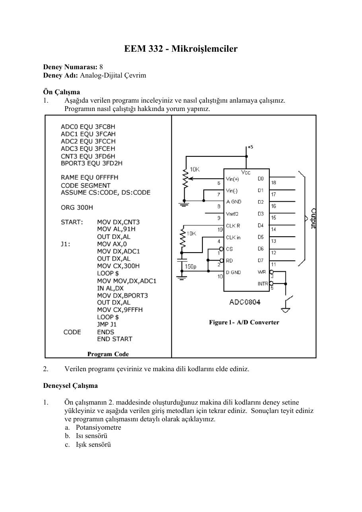
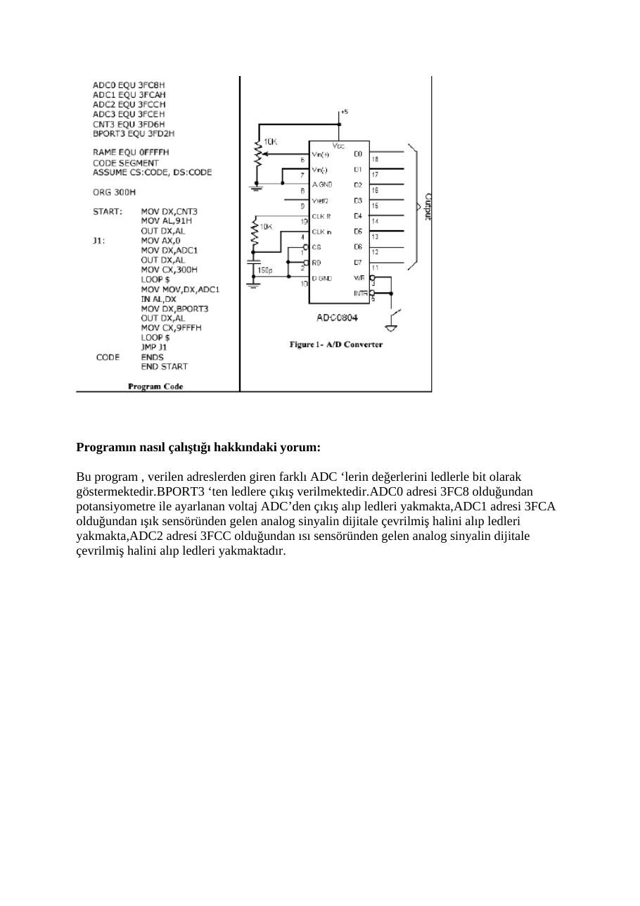

· EEM332
EEM332 Microprocessors: Laboratory 7–9: SKC-86, ADC and DAC
EEM332 – Mikroişlemciler · 09.05.2005 · 18.10.2026
This post brings together the related notes and exercises from the Başkent University EEM332 Microprocessors course archive (2005–2015). It covers input-output on the SKC-86 trainer, ADC reading, sawtooth wave generation with the DAC, and lab reports. Work prepared by a friend and course documents are presented together; student names, numbers and group information have been removed. PDF archive copies of the documents and, where available, source codes can be downloaded as a ZIP at the end of the post.
eem332_lab07
EEM 332 - Microprocessors Experiment Number: 8 Experiment Title: SKC-86 Input and Programming
Preliminary Work: The preliminary work will not be collected during the laboratory session.
1) Read the document titled “SKC-86 Guide” provided on the website.
2) Examine the program below. This program first turns off all the LEDs on the SKC-86 set,
and then, when the user presses the relevant button, lights the LED associated with that button.
;==========================================
;===== 8BIT Input/Output TEST PROGRAM =====
;===== FOR SKC - 86 =====
;==========================================CNT3 EQU 3FD6H
APORT3 EQU 3FD0H
BPORT3 EQU 3FD2H
CPORT3 EQU 3FD4H
RAME EQU 0FFFFHCODE SEGMENTASSUME CS:CODE, DS:CODE
ORG 0START: MOV SP,RAME
MOV AL,90H
MOV DX,CNT3
OUT DX,ALJ1: MOV DX,APORT3
IN AL,DX
NOT AL
MOV DX,BPORT3
OUT DX,AL
JMP J1CODE ENDS
END STARTExperimental Work
1) Load the Example1 program located at CS=F000:0000 on the SKC-86. To do this,
follow the steps below
Press the “2/GO” key, enter F000:0, press the “.” key.
Observe what the program does.
2) Similarly, load the Example2 program located at CS=F000:0040.
3) Load the Example3 program by following the steps below:
Press the “OB” key, enter 3F08, press the “,” key, then “0”, then the “.” key in that order. Press “IB”, then “3F08”, then the “,” key in that order.
Note the values you see on the display. Repeat the above steps after changing the position of the potentiometer. Note the values.
4) Using the Turbo Debugger program, obtain the machine language codes of the program
given in the preliminary work. Load this program onto the SKC-86 using the keypad.
Note the operation that the program performs.
5) Make the necessary changes to the program given in the preliminary work so that it performs
the inverse of the operation (when first run, all LEDs are on, and they turn off when the relevant keys are pressed). Obtain the machine language codes of the program and load it onto the trainer.
State your program, your comments, and your observations from the previous exercises in your report.
eem332_lab08
EEM 332 - Microprocessors Experiment Number: 8 Experiment Title: Analog-to-Digital Conversion
Preliminary Work
1. Examine the program given below and try to understand how it works.
Comment on how the program works.
2. Assemble the given program and obtain its machine language codes.
Experimental Work
1. Load the machine language codes you created in item 2 of the preliminary work onto the
trainer and repeat for the input methods given below. Verify the results and explain the operation of the program in detail. a. Potentiometer b. Temperature sensor c. Light sensor
2. Write the algorithm of the program and calculate the resolution (step size) for the
potentiometer.

eem332_lab09
EEM 332 - Microprocessors Experiment Number: 9 Experiment Title: Digital-to-Analog Conversion
Experimental Work
1. Convert the sawtooth signal generator program given below into machine language
codes.
DAC EQU 3FD8H
RAME EQU 0FFFFH
CODE SEGMENTASSUME CS:CODE, DS:CODE
ORG 0
START: MOV AL,00
MOV DX,DAC
J1: OUT DX,AL
INC AL
JMP J1CODE ENDS
END STARTLoad the program onto the trainer and run it. Observe the output signal at the DAC pin on the JMP5 output of the trainer.
2. Simplify the program given below and obtain its machine language codes.
DAC EQU 3FD8H
RAME EQU 0FFFFHCODE SEGMENTASSUME CS:CODE,DS:CODE
ORG 0START: MOV AL,00
MOV DX,DAC
J1: OUT DX,AL
MOV AL,128
MOV CX,0FFFH
LOOP $
OUT DX,AL
MOV AL,192
MOV CX,0FFFH
LOOP $
OUT DX,AL
MOV AL,238
MOV CX,0FFFH
LOOP $
OUT DX,AL
MOV AL,255
MOV CX,0FFFH
LOOP $
OUT DX,AL
MOV AL,238
MOV CX,0FFFH
LOOP $OUT DX,AL
MOV AL,192
MOV CX,0FFFH
LOOP $
OUT DX,AL
MOV AL,128
MOV CX,0FFFH
LOOP $
OUT DX,AL
MOV AL,64
MOV CX,0FFFH
LOOP $
OUT DX,AL
MOV AL,17
MOV CX,0FFFH
LOOP $
OUT DX,AL
MOV AL,0
MOV CX,0FFFH
LOOP $
OUT DX,AL
MOV AL,17
MOV CX,0FFFH
LOOP $
OUT DX,AL
MOV AL,64
MOV CX,0FFFH
LOOP $
JMP J1CODE ENDS
END STARTLoad the program onto the trainer and run it. Observe the output signal at the DAC pin on the JMP5 output of the trainer. Explain what the program does. Include the simplified code in your report.
3. What can be done to change the frequency of the generated signals?
mikro deney 7 rapor
Başkent University Department of Electrical and Electronics Engineering
EEM 332 – Microprocessors Laboratory
REPORT
Experiment No:# 7 Experiment Title: SKC-86 Input and Programming Experiment Date: 05/05/2006
1-) In the first experiment we ran a sample program. To do this, we pressed the 2/go key to select which address's program would be run. We entered the address by typing F000:0. When we pressed the . key, the program started running.
The program output after doing these
The LEDs light up one after another. After this process finishes, the LEDs start lighting in groups of four: first the first four, then the second four, and then the process returns to the beginning.
2-) We did the above procedure for the sample program at address F000:0040. This time, when we pressed the button under the LED we wanted to light, the LED connected to that button started to light.
4-)
MOV SP,RAME CS:0000 BCFFFF
MOV AL,90H CS:0003 B090
MOV DX,CNT3 CS:0005 BAD63F
OUT DX,AL CS:0008 EEMOV DX,APORT3 CS:0009 BAD03F
IN AL,DX CS:000C EC
NOT AL CS:000D F6D0
MOV DX,BPORT3 CS:000F BAD23F
OUT DX,AL CS:0012 EE
JMP J1 CS:0013 EBF4We entered the hex codes above in order. First we pressed 1, then pressed 8 to set the code segment to 400, and pressed the period. We pressed 0 to set the offset to 0, then entered the hex codes byte by byte separated by commas, and pressed the period to finish. When we pressed 2, we again entered the start and end addresses of the program to be run, and ran it. Initially all of the LEDs are off. If we press the button of the LED we want to light, that LED lights up. This is the operation the program performs.
5-) In the program above we deleted the not instruction. The result was a program that turns the LEDs off when the buttons are pressed. When a button was pressed, the LED associated with that button went off.
CNT3 EQU 3FD6H
APORT3 EQU 3FD0H
BPORT3 EQU 3FD2H
CPORT3 EQU 3FD4H
RAME EQU 0FFFFHCODE SEGMENTASSUME CS:CODE, DS:CODE
ORG 0
START: MOV SP,RAME
MOV AL,90H
MOV DX,CNT3
OUT DX,AL
J1: MOV DX,APORT3
IN AL,DX
MOV DX,BPORT3
OUT DX,AL
JMP J1CODE ENDS
END STARTMachine code
MOV SP,RAME CS:0000 BCFFFF
MOV AL,90H CS:0003 B090
MOV DX,CNT3 CS:0005 BAD63F
OUT DX,AL CS:0008 EE
MOV DX,APORT3 CS:0009 BAD03F
IN AL,DX CS:000C EC
MOV DX,BPORT3 CS:000D BAD23F
OUT DX,AL CS:0010 EE
JMP J1 CS:0011 EBF6rapor8
Başkent University Department of Electrical and Electronics Engineering
EEM 332 – Microprocessors Laboratory
Report
Experiment No: #8 Experiment Title: Analog-to-Digital Conversion Experiment Date: 05/05/06
1) ALGORITHM OF THE PROGRAM
The program sends the values of the different ADCs entered through their addresses to the LEDs. The 8 LEDs represent 8 bits. Since the ADC0 address is 3FC8, the output of the ADC for the voltage set with the potentiometer is read and used to light the LEDs. The potentiometer is used to set a voltage between 0 and 5 volts. When the ADC input is set to 0 volts with the potentiometer, no LEDs light; when it is raised to 5 volts, all LEDs light; and at other voltage values the LEDs light according to the voltage. Since the ADC2 address is 3FCC, the LEDs light according to the digital version of the analog signal taken from the temperature sensor. As the temperature value of the temperature sensor increases, the value shown by the 8 bits increases and the LEDs light accordingly. Since the ADC1 address is 3FCA, the LEDs light according to the digital version of the analog signal taken from the light sensor. The lighting state of the LEDs changes according to the intensity of the light.
ADC0 EQU 3FC8H ; The addresses of the ADCs are defined
ADC1 EQU 3FCAH
ADC2 EQU 3FCCH
ADC3 EQU 3FCEH
CNT3 EQU 3FD6H
BPORT3 EQU 3FD2H ;Address of the port that drives the LEDsRAME EQU 0FFFFH
CODE SEGMENTASSUME CS:CODE, DS:CODE
ORG 300HSTART: MOV DX,CNT3
MOV AL,91H
OUT DX,AL
J1: MOV AX,0
MOV DX,ADC1
OUT DX,AL ;The ADC1 address is selected
MOV CX,300H ;Wait for the signal from the ADC1 address to stabilize
LOOP $
MOV DX,ADC1
IN AL,DX ;The signal from the ADC1 address is loaded into AL
MOV DX,BPORT3
OUT DX,AL ;The LEDs are lit via BPORT3 according to AL
MOV CX,9FFFH
LOOP $
JMP J1 ;Go to J1CODE ENDS
END START2) FLOWCHART
ön çalışma 8
Comment on how the program works
This program displays the values of the different ADCs entered through the given addresses as bits on the LEDs. Output to the LEDs is provided from BPORT3. Since the ADC0 address is 3FC8, the voltage set with the potentiometer is taken from the ADC output and used to light the LEDs; since the ADC1 address is 3FCA, the digitized form of the analog signal from the light sensor is taken and used to light the LEDs; and since the ADC2 address is 3FCC, the digitized form of the analog signal from the temperature sensor is taken and used to light the LEDs.
2) MACHINE CODE OF THE GIVEN PROGRAM:
MOV DX,CNT3 CS:0300 BAD63F
MOV AL,91H CS:0303 B091
OUT DX,AL CS:0305 EE
MOV AX,0 CS:0306 B80000
MOV DX,ADC1 CS:0309 BACA3F
OUT DX,AL CS:030C EE
MOV DX,300H CS:030D B90003
LOOP $ CS:0310 E2FE
MOV DX,ADC1 CS:0312 BACA3F
IN AL,DX CS:0315 EC
MOV DX,BPORT3 CS:0316 BAD23F
OUT DX,AL CS:0319 EE
MOV CX,9FFFH CS:031A B9FF9F
LOOP $ CS:031D E2FE
JMP J1 CS:031F EBES
rap
Başkent University Department of Electrical and Electronics Engineering
EEM 332 – Microprocessors Laboratory
Preliminary Work / Report
Experiment No: # 9 Experiment Title: Digital-to-Analog Conversion Experiment Date: 12/05/2006
1-)
DAC EQU 3FD8H
RAME EQU 0FFFFH
CODE SEGMENTASSUME CS:CODE, DS:CODE
ORG 0
START: MOV AL,00
MOV DX,DAC
J1: OUT DX,AL
INC AL
JMP J1CODE ENDS
END STARTThe machine language codes are
cs:0000 B000 mov al,00 cs:0002 BAD83F mov dx,3FD8 cs:0005 EE out dx,al cs:0006 FEC0 inc al cs:0008 EBFB jmp 0005
When we loaded the program onto the trainer, ran it, and observed the output signal at the DAC pin on the JMP5 output of the trainer, we saw that the program produces a sawtooth-like signal. In the program, AL is initially assigned 0 and this value is then incremented. These increasing AL values are sent to the output. AL can reach a maximum value of FF, after which it drops back to 0. For this reason, the output signal appears as a sawtooth.
2-) The simplified version of the given program;
DATA DB 128,192,238,255,238,192,128,64,17,00,17,64
START:
MOV AL,00
MOV SI,OFFSET DATA
MOV DX,DAC
J2: MOV BL,00
MOV BH,0CH
J1: OUT DX,AL
MOV AL,[SI]
INC SI
MOV CX,0FFFH
LOOP $CMP BL,BH
JE J2
JMP J1CODE ENDS
END STARTThe machine language codes are
cs:000C B000 mov al,00 cs:000E BE0000 mov si,0000 cs:0011 BAD83F mov dx,3FD8 cs:0014 B300 mov bl,00 cs:0016 B70C mov bh,0C cs:0018 EE out dx,al cs:0019 8A04 mov al,[si] cs:001B 46 inc si cs:001C B9FF0F mov cx,0FFF cs:001F E2FE loop 001F cs:0021 3ADF cmp bl,bh cs:0023 74EF je 0014 cs:0025 EBF1 jmp 0018
When we loaded the program onto the trainer, ran it, and observed the output signal at the DAC pin on the JMP5 output of the trainer, we observed that the program produces a digital sine signal at the output. We transferred the values given in the experiment to AL one after another through SI. We kept incrementing SI inside the loop. We observed the contents of AL at the output through DX. When BH was given the value 12, that is, the total number of data entered, and compared with BL, it was checked whether the entered data had run out. With the value we gave to CX, we determined how long the signal would stay at each value. In other words, the digital signal was obtained by making waits of CX (the frequency it shows) at the output sine signal.
3-) To change the frequency of the generated signal, it is possible to change the values given to CX. Since the value we give to CX determines how long the signal stays at each value, we can change the frequency by changing this parameter. In other words, the output sine signal makes waits of CX (the frequency it shows).
lab81
ADC0 EQU 3FC8H
ADC1 EQU 3FCAH
ADC2 EQU 3FCCH
ADC3 EQU 3FCEH
CNT3 EQU 3FD6H
BPORT3 EQU 3FD2H
RAME EQU 0FFFFH
CODE SEGMENT
ASSUME CS:CODE,DS:CODE
ORG 300H
START: MOV DX,CNT3
MOV AL,91H
OUT DX,AL
J1: MOV AX,0
MOV DX,ADC1
OUT DX,AL
MOV CX,300H
LOOP $
MOV DX,ADC1
IN AL,DX
MOV DX,BPORT3
OUT DX,AL
MOV CX,9FFFH
LOOP $
JMP J1
CODE ENDS
END STARTNote: Although the file name of the SKC-86 handout is experiment 7, the document states “Experiment Number: 8”. The title in the file has been preserved.